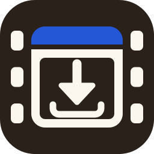
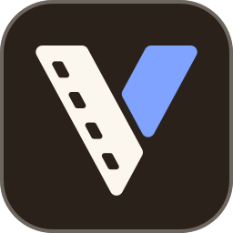
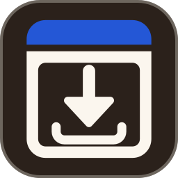

A window whose title bar carries the accent blue #2457D6; inside it a download arrow lands in a tray. Film perforations run down both sides. On Windows the window sits on an espresso tile #2B211B with a cream plate #FBF6EE; on Android the tile is the accent and the plate is cream with the glyph cut out of it. Below 24 px the small cut drops the perforations.
نافذة شريطها العلوي أزرق، وفي داخلها سهم تنزيل يستقر في صينية، وثقوب الفيلم على الجانبين. على ويندوز بلاطة حبرية، وعلى أندرويد بلاطة زرقاء ولوحة كريمية.







Everything here is generated by tool/icons/vidhoist_kit.py; edit the geometry there, not the files.